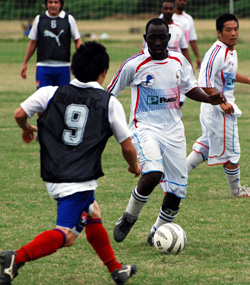
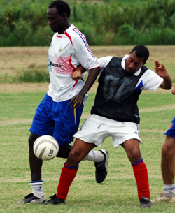
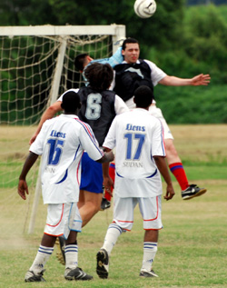

|
Misato, Sunday 2nd September,
Lions would like to start this report by applauding a rare-to-see sportsmanship from the France left back, who kicked the ball out of play after going past the Lions right-back who pulled up with a hamstring. Although the France player could've put in a dangerous cross, especially that they were 1-0 down at the time!
All respect to France FC, talented, strong, and true sportsmanship....how football should be!
The beautiful new surface in Misato was home to a brilliant game that saw France FC wear bibs, whilst Lions wore the national French kit. The game started strongly as expected, with midfield being the battle ground.
This time round, AbuBakr (Afro), played much better than in the opening game, and provided the tall Zuhair with a through pass that Zuhair inturn laid across for Ken, 6 yards out. To everyone's surprise, even Zuhair, Ken passed the ball back across rather than finishing calmly as he usually does, only to see Zuhair stretch and slide, but still could not make contact at the far post.
Gaafar Somi, back from his groin injury, was influential as ever, and had a good spell of 20 minutes that saw him take a shot, cross, and head twice from corners, but the score remained 0-0.
France pressed and had a few good overlapping runs on the wings that saw them get into the box and on 1 or 2 opportunities take shots on goal, 1 cleared by Baghir, the other punched away by Lions keeper Orlando.
A corner from France almost crept in, when a Lions defender let is past him at the near post, only to see the ball hit the unexpecting Orlando's shins, before it was scrambled away.
France played a high offside line, and as Ken and Omar were in an offisde position, but walking back, a perfectly weighted through ball from AbuBakr found Zuhair run from an onside position, 1-on-1 with the keeper, and when Zuhair is in that situation, it is a goal, and surely it was, as he placed it confidently past a helpless keeper. There were few complaints about the goal, as the linesman raised his flag, but all credit to the referee Simon, he waved the play on.
Lions went into half time leading 1-0.
The second half was getting even better, with France taking a few 20 yard shots, but were off target. A dangerous through ball could've handed France the equaliser, but Orlando rushed out of his goal to intercept the ball right at the edge of the box. Ahmed, and Omar had a few but tame shots on the France goal.
One of the best battles to see were the Lions striker Zuhair, against the France centre-back, Nacer. Both tall, strong and talented competed brillaintly throughout the game.
Gaafar Somi then had an inspiring run, that seemed to be a repeat of his TML debut 2 years ago when he scored the winner for Barbs against Shane, where he dribbled past a couple of players, outran the last defender, but this time unleashed a shot that only rattled the cross-bar before going out of play.
The game was evenly balanced, and Lions needed a second goal to ease the pressure. Omar had a good run into the box where he could've finished, only to have the ball stuck under, however, recovered, and went into the 6-yard box on the right, and put in a perfect chip to the far post that saw the smallest and quickest player on the pitch, Tatsuya (also known as Conejo), fly into the net with a beautiful far post header to bag the 3-points for Lions with 10 minutes to go.
All Lions players played well, the defence was solid, Omar, Ken, and AbuBakr worked hard, but Gaafar Somi and Zuhair were fabulous. Man of the Match? Too difficult to call between those 2, but for scoring a beautiful goal...
MoM: Zuhair Sule
6 points, 6 goals, 2 wins, and 2 clean sheets: The Lions mean business this season 5!
Report by Hussein Shehata
|